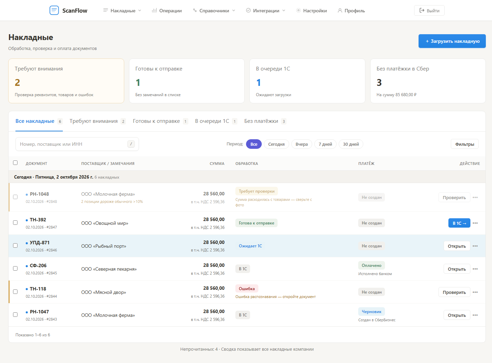
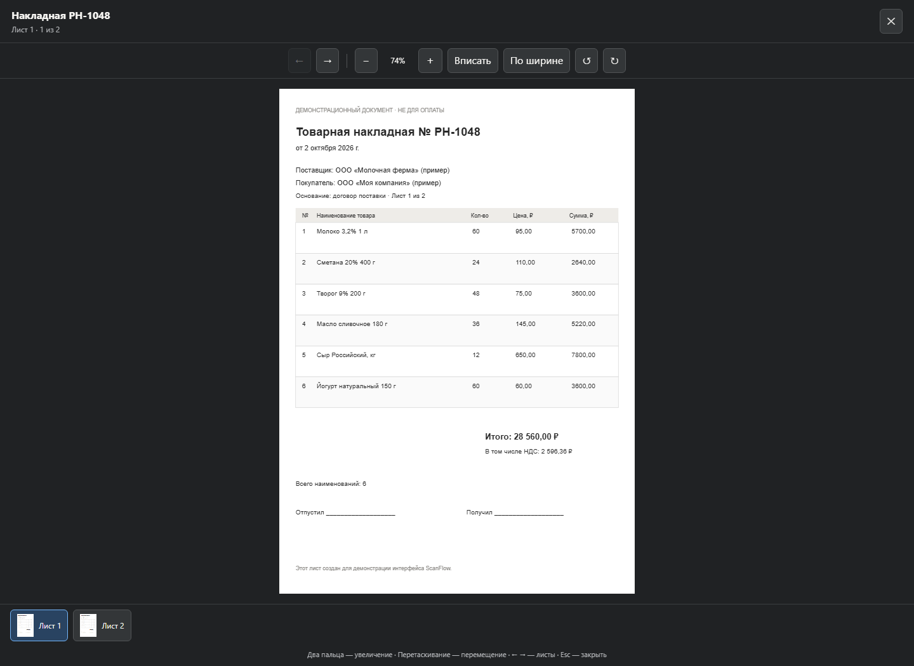
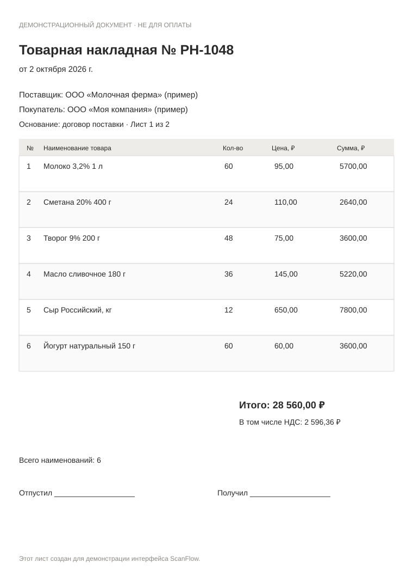

Сводка по компании, серверные быстрые фильтры, причины замечаний, чёткие статусы 1С и платежей. На телефоне — карточки документов.
ВИЗУАЛЬНЫЕ ВАРИАНТЫ / 02.10.2026
Открыть кабинет →Проверять документы быстрее
Один документ — от фото и сверки до отправки в 1С и оплаты.
Здесь демонстрационные данные. Вкладка «Внедрено» показывает сделанные изменения; остальные — интерактивные предложения дальнейшего развития.
Сделано в текущем интерфейсе
Рабочая реализацияПолноэкранный просмотр, увеличение двумя пальцами, перемещение, переключение листов и запоминание поворота. Фото рядом с товарами.




Фото + реквизиты без переключения вкладок
Интерактивный прототипРН-1048 · ООО «Молочная ферма»Сверка перед созданием платежа
Проверено 4 из 6Лист 1 из 2

12Подписи · Все листы одного документа
Что даёт
Бухгалтер видит фото, значения и оставшиеся проверки одновременно. Готовность к оплате понятна до нажатия кнопки.
Что потребуется
Боковая панель существующих отметок сверки, сохранение позиции и масштаба каждого листа, просмотр PDF внутри кабинета. На телефоне — переключатель «Фото / Реквизиты» с сохранением позиции.
Рабочее место проверки накладной
Интерактивный прототипПроверка РН-1048В очереди ещё 7 документов · изменения сначала сохраняются, затем разрешается отправка
2 замечанияОригинал · лист 1
Выберите строку справа — место на оригинале подсветится
ДАННЫЕ ДЛЯ 1С
Товары 6
| Товар | Кол-во | Цена | Сумма |
|---|---|---|---|
| Молоко 3,2% 1 лМолоко питьевое 1 л · 1С | 60 | 95,00 | 5 700 |
| Сметана 20% 400 гСметана 20% · 1С | 24 | 110,00 | 2 640 |
| Творог 9% 200 гТворог фасованный · 1С | 48 | 57,00 | 3 600 |
| Масло сливочное 180 гМасло 82,5% · 1С | 36 | 145,00 | 5 220 |
| Сыр Российский, кгЦена выросла на 18% | 12 | 650,00 | 7 800 |
| Йогурт 150 гЙогурт натуральный · 1С | 60 | 60,00 | 3 600 |
Строка 3 · расхождение
На фото цена 75,00 ₽
В распознанных данных — 57,00 ₽. Сумма строки 3 600 ₽ соответствует цене 75 ₽ при количестве 48.
↶После исправления здесь появится запись с прежним значением и возможностью отмены.
Что даёт
Клик по замечанию показывает конкретную строку. Правки сохраняются с историей, а проверяющий видит цену, количество, единицу и соответствие номенклатуре 1С вместе с оригиналом.
Что потребуется
Координаты строк из OCR, их привязка после поворота и склейки листов, очередь нерешённых замечаний, контроль устаревших правок и восстановление предыдущих значений. Здесь подсветка демонстрируется на подготовленном листе.
Пакетная сверка и согласование
Интерактивный прототипРН-1048 · Молочная фермаОтветственный: вы · Загрузил кладовщик сегодня в 10:32
Требует решения✓ Загружено✓ Распознано● Проверка○ Согласование○ 1С / Оплата
Сумма требует проверки
Проверьте оригинал и товары до передачи на согласование. Документ не должен уйти в оплату с нерешённым замечанием.
Контроль документа
- ✓ Поставщик и ИНН подтверждены
- ✓ Номенклатура сопоставлена
- ○ Итог проверяется
- ○ Оплата требует согласования
История работы
10:32 Кладовщик загрузил два листа
10:33 Накладная распознана
10:35 Бухгалтер начал проверку
Сейчас Ожидает вашего решения
Что даёт
Кладовщик загружает, бухгалтер сверяет, руководитель согласует. Видно, кто работает с документом, почему он остановился и что уже сделано. Готовые документы отправляются пакетом с отчётом по каждому.
Что потребуется
Роли и права, блокировка одновременных правок, назначение ответственных, задания согласования, уведомления и контроль сроков. Статусы 1С и банка должны приходить отдельно от решения сотрудника.
Как развивать дальше
Просмотр PDF без выхода из карточки; миниатюры фото прямо в списке; сохранение масштаба листа; фильтр «непрочитанные»; сохранённые наборы фильтров; удобная сверка шапки на телефоне.
Подсветка источника каждой строки; отдельная очередь несопоставленных товаров; сравнение с предыдущей поставкой; управление многостраничным документом; совместная сверка и согласование; журнал действий с возвратом правок.
Рекомендую следующим этапом сверку реквизитов рядом с фото и встроенный PDF. Затем — проверку строк с привязкой к оригиналу. Командное согласование полезнее после появления нескольких сотрудников в одной компании.